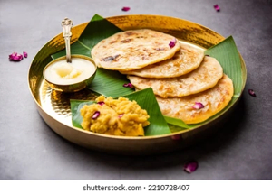

Puran Poli

Puranpoli is a traditional Indian sweet flatbread, especially popular in
Maharashtra and across western and southern India. The dish consists of
two main components: puran, a sweet filling made primarily from cooked
chana dal (Bengal gram), jaggery, and aromatic spices like cardamom and
nutmeg, and poli, a soft outer covering crafted from wheat flour and
sometimes all-purpose flour. To prepare puranpoli, the puran filling is
encased in the dough, rolled out into thin discs, and then roasted on a
griddle with a drizzle of ghee until golden brown. The result is a soft,
flaky flatbread with a melt-in-the-mouth sweet center. Puranpoli is deeply
associated with festivals such as Holi, Ganesh Chaturthi, and Diwali,
symbolizing warmth, hospitality, and tradition in Maharashtrian culture.
It is typically served warm, accompanied by ghee, milk, or sometimes
katachi amti (a spiced lentil broth). There are regional variations in the
recipe, with some versions incorporating coconut or different lentils, but
the essential character remains a sweet, spiced, stuffed flatbread that
holds a special place in festive and everyday meals across many Indian
households.
Ingredients to make Puran Poli
- For the sweet filling (puran):
- Chana dal (split Bengal gram) – 1 cup
- Water (for cooking chana dal) – about 2.5 to 3 cups
- Jaggery (grated or powdered) – 1 cup
- Ghee – 1 to 2 teaspoons (for the filling)
- Cardamom powder – ½ to 1 teaspoon
- Nutmeg powder – ⅛ to ¼ teaspoon (optional)
- Dry ginger powder – ¾ to 1 teaspoon (optional)
- Fennel powder – 1 teaspoon (optional)
-
Grated coconut – 1 to 1.5 tablespoons (optional, for added flavor)
- Saffron – a pinch (optional)
- Chana dal (split Bengal gram) – 1 cup
- Water (for cooking chana dal) – about 2.5 to 3 cups
- Jaggery (grated or powdered) – 1 cup
- Ghee – 1 to 2 teaspoons (for the filling)
- Cardamom powder – ½ to 1 teaspoon
- Nutmeg powder – ⅛ to ¼ teaspoon (optional)
- Dry ginger powder – ¾ to 1 teaspoon (optional)
- Fennel powder – 1 teaspoon (optional)
-
Grated coconut – 1 to 1.5 tablespoons (optional, for added flavor)
- Saffron – a pinch (optional)
- For the outer covering (poli):
- Whole wheat flour – 1.5 to 2 cups
-
All-purpose flour (maida) – ½ cup (optional, can use only wheat flour)
- Oil or ghee – 1 to 4 tablespoons (for dough and roasting)
- Salt – ½ teaspoon or as needed
- Turmeric powder – ¼ teaspoon (optional, for color)
- Water – as required to knead the dough
- For rolling and roasting:
- All-purpose flour – for dusting
- Ghee or oil – for roasting puran poli
Steps to make Puran Poli
-
Rinse 1 cup chana dal thoroughly and soak it in water for 30 minutes.
-
Drain the dal and pressure cook it with about 2.5 to 3 cups water until
soft but not mushy (about 3-4 whistles).
- Drain any excess water from the cooked dal and mash it well.
-
In a pan, add the mashed dal and 1 cup grated jaggery. Cook on medium
heat, stirring continuously, until the mixture thickens and leaves the
sides of the pan.
-
Add 1-2 teaspoons ghee, ½ to 1 teaspoon cardamom powder, and optional
spices (nutmeg, dry ginger, saffron, or fennel). Mix well and let the
filling (puran) cool.
-
In a mixing bowl, combine 1.5 to 2 cups whole wheat flour, ½ cup
all-purpose flour (optional), ½ teaspoon salt, ¼ teaspoon turmeric
(optional), and 1-2 tablespoons oil or ghee.
-
Gradually add water and knead into a soft, pliable dough. Cover and let
it rest for at least 30 minutes.
-
Divide both the dough and the puran filling into equal-sized balls.
-
Take one dough ball, flatten it, and place a puran ball in the center.
Gently bring the edges together to seal the filling inside.
-
Dust with flour and gently roll out into a thin disc, being careful not
to let the filling spill out.
-
Heat a tawa or griddle. Place the rolled puranpoli on it and cook on
medium heat until golden spots appear on both sides, applying ghee or
oil as needed.
- Repeat with remaining dough and filling balls.
-
Serve puranpoli warm with ghee, milk, or katachi amti (spiced lentil
broth).
Home